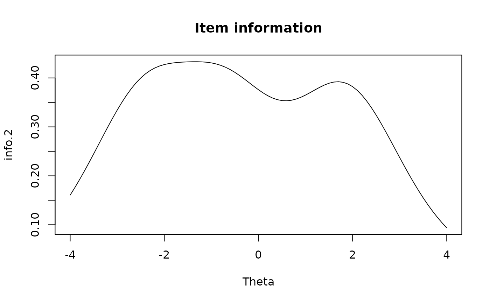

Given an internal mirt item object extracted by using extract.item,
compute the item information.
Arguments
- x
an extracted internal mirt object containing item information (see
extract.item)- Theta
a vector (unidimensional) or matrix (multidimensional) of latent trait values
- degrees
a vector of angles in degrees that are between 0 and 90. Only applicable when the input object is multidimensional
- total.info
logical; return the total information curve for the item? If
FALSE, information curves for each category are returned as a matrix- multidim_matrix
logical; compute the information matrix for each row in
Theta? IfThetacontains more than 1 row then a list of matrices will be returned, otherwise ifThetahas exactly one row then a matrix will be returned
References
Chalmers, R., P. (2012). mirt: A Multidimensional Item Response Theory Package for the R Environment. Journal of Statistical Software, 48(6), 1-29. doi:10.18637/jss.v048.i06
Author
Phil Chalmers rphilip.chalmers@gmail.com
Examples
mod <- mirt(Science, 1)
#>
Iteration: 1, Log-Lik: -1629.361, Max-Change: 0.50660
Iteration: 2, Log-Lik: -1617.374, Max-Change: 0.25442
Iteration: 3, Log-Lik: -1612.894, Max-Change: 0.16991
Iteration: 4, Log-Lik: -1610.306, Max-Change: 0.10461
Iteration: 5, Log-Lik: -1609.814, Max-Change: 0.09162
Iteration: 6, Log-Lik: -1609.534, Max-Change: 0.07363
Iteration: 7, Log-Lik: -1609.030, Max-Change: 0.03677
Iteration: 8, Log-Lik: -1608.988, Max-Change: 0.03200
Iteration: 9, Log-Lik: -1608.958, Max-Change: 0.02754
Iteration: 10, Log-Lik: -1608.878, Max-Change: 0.01443
Iteration: 11, Log-Lik: -1608.875, Max-Change: 0.00847
Iteration: 12, Log-Lik: -1608.873, Max-Change: 0.00515
Iteration: 13, Log-Lik: -1608.872, Max-Change: 0.00550
Iteration: 14, Log-Lik: -1608.872, Max-Change: 0.00318
Iteration: 15, Log-Lik: -1608.871, Max-Change: 0.00462
Iteration: 16, Log-Lik: -1608.871, Max-Change: 0.00277
Iteration: 17, Log-Lik: -1608.870, Max-Change: 0.00145
Iteration: 18, Log-Lik: -1608.870, Max-Change: 0.00175
Iteration: 19, Log-Lik: -1608.870, Max-Change: 0.00126
Iteration: 20, Log-Lik: -1608.870, Max-Change: 0.00025
Iteration: 21, Log-Lik: -1608.870, Max-Change: 0.00285
Iteration: 22, Log-Lik: -1608.870, Max-Change: 0.00108
Iteration: 23, Log-Lik: -1608.870, Max-Change: 0.00022
Iteration: 24, Log-Lik: -1608.870, Max-Change: 0.00059
Iteration: 25, Log-Lik: -1608.870, Max-Change: 0.00014
Iteration: 26, Log-Lik: -1608.870, Max-Change: 0.00068
Iteration: 27, Log-Lik: -1608.870, Max-Change: 0.00065
Iteration: 28, Log-Lik: -1608.870, Max-Change: 0.00019
Iteration: 29, Log-Lik: -1608.870, Max-Change: 0.00061
Iteration: 30, Log-Lik: -1608.870, Max-Change: 0.00012
Iteration: 31, Log-Lik: -1608.870, Max-Change: 0.00012
Iteration: 32, Log-Lik: -1608.870, Max-Change: 0.00058
Iteration: 33, Log-Lik: -1608.870, Max-Change: 0.00055
Iteration: 34, Log-Lik: -1608.870, Max-Change: 0.00015
Iteration: 35, Log-Lik: -1608.870, Max-Change: 0.00052
Iteration: 36, Log-Lik: -1608.870, Max-Change: 0.00010
extr.2 <- extract.item(mod, 2)
Theta <- matrix(seq(-4,4, by = .1))
info.2 <- iteminfo(extr.2, Theta)
#do something with the info?
plot(Theta, info.2, type = 'l', main = 'Item information')

if (FALSE) { # \dontrun{
#category information curves
cat.info <- iteminfo(extr.2, Theta, total.info = FALSE)
plot(Theta, cat.info[,1], type = 'l', ylim = c(0, max(cat.info)),
ylab = 'info', main = 'Category information')
for(i in 2:ncol(cat.info))
lines(Theta, cat.info[,i], col = i)
## Customized test information plot
T1 <- T2 <- 0
dat <- expand.table(LSAT7)
mod1 <- mirt(dat, 1)
mod2 <- mirt(dat, 1, 'Rasch')
for(i in 1:5){
T1 <- T1 + iteminfo(extract.item(mod1, i), Theta)
T2 <- T2 + iteminfo(extract.item(mod2, i), Theta)
}
plot(Theta, T2/T1, type = 'l', ylab = 'Relative Test Information', las = 1)
lines(Theta, T1/T1, col = 'red')
# multidimensional
mod <- mirt(dat, 2, TOL=1e-2)
ii <- extract.item(mod, 1)
Theta <- as.matrix(expand.grid(-4:4, -4:4))
iteminfo(ii, Theta, degrees=c(45,45)) # equal angle
iteminfo(ii, Theta, degrees=c(90,0)) # first dimension only
# information matrices
iteminfo(ii, Theta, multidim_matrix = TRUE)
iteminfo(ii, Theta[1, , drop=FALSE], multidim_matrix = TRUE)
} # }